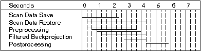
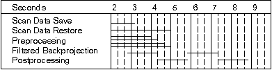
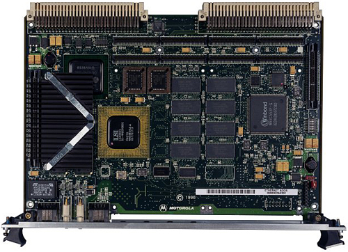
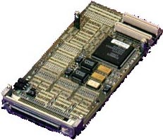
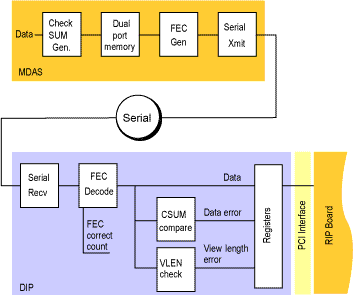
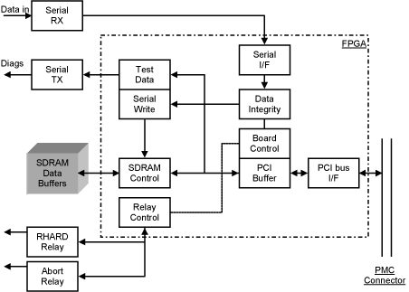
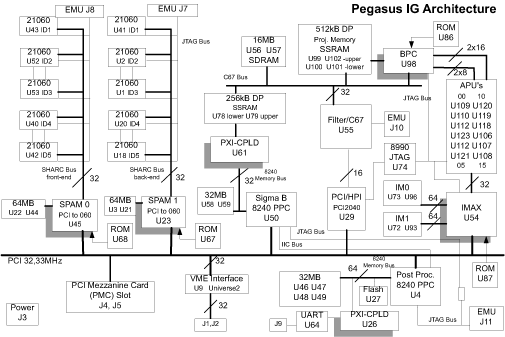

Operating Documentation
Direction 5114045-800, Rev# 10
LightSpeed 4.X Service Information (Advanced)
Operating Documentation |
This module consists of the following Sections:
Section 1 - SRU Components and Block Diagrams
Section 2 - Scan Reconstruction Unit Overview
Section 3 - Scan Reconstruction Unit Hardware Theory
Section 4 - Scan Data Disk Assembly
Section 5 - Recon Interface Processor (RIP) - Motorola Board
Section 6 - PMC SCSI Card - SBS Technologies (2265396)
Section 7 - DAS Interface Processor (DIP)
Section 8 - Pegasus Image Generator (PEG-IG) Board Theory
Section 9 - Scan Reconstruction Unit Cabling
The Scan Reconstruction Unit (SRU) consists of the following components:
| Scan Data Disk (SDD) | The SDD is the raw DAS data save media and can hold 1,000 8-slice rotations of data. |
| Reconstruction Interface Processor (RIP) | The RIP is responsible for coordinating the save operation and moving the data from the DIP to the scan data disk. |
| DAS Interface Processor (DIP) | The DIP is responsible for receiving data from Slip Ring Communications (SRC) , decoding the FEC CRC and buffering it for saving by the RIP. |
| Pegasus Image Generator (PEG-IG) | The PEG-IG is responsible for correcting and calibrating the DAS data (after it has been saved onto the SDD), and then making an image from the corrected view data. |
For SRU component interconnection information, see the appropriate Console block diagram (“click” on a PDF icon, below).
Media File 1: Global Console - Linux (GOC2) Block Diagram

Media File 2: Global Console - Octane2 (GOC1) Block Diagram

The DAS Interface Processor (DIP) contains a 24V X-ray Abort relay. This normally open relay must be closed to enable X-ray exposure. If the SRU detects that it is unable to save uncorrupted scan data to non-volatile memory, then it will open the X-ray Abort relay, halting any further X-ray exposure.
Table 1: Scan Data Flow Rates
| Data Transfer | 984 HZ | 1405 HZ | 1968 HZ |
|---|---|---|---|
| DAS Interface | 61.40 Mb/s | 87.67 Mb/s | 122.80 Mb/s |
| Scan Data Save | 6.14 Mb/s | 8.77 Mb/s | 12.28 Mb/s |
The Forward Error Correction (FEC) algorithm implemented in DIP hardware will add an additional 10% to the scan data rates. All data received through the DAS Interface must be saved in non-volatile memory. One super view size (including header) is 6,240 bytes.
System requirement 2000 rotations:
984 Vws/Rot x 4 Rows/Vw x 768 Ch/Row x 2 B/Ch = 6.05MB / Rot - Scan Data
984 Vws/Rot x 24 Wds/Hdr x 4 B/Wd = 94.5 KB / Rot - Header
2000 Rotations x 6.14 MB / Rotation = 12.28 GB.
Scan Data Disk is currently an 18GB capacity disk, and holds only the Scan Data (views).
OC host computer holds Scan Header Data.
Table 2: Reconstruction Data Flow Rates
| Data Transfer | 3.0 Seconds |
|---|---|
| Scan Data Restore | 3.0 MB/s |
| Prep to FBP to Image Pull | 2.34 MB/s |
Time-to-First-Image reconstruction time, T1st, is measured from the point the software function, DIP Control, receives the first “Data Available” interrupt from DIP hardware, to the point where the software function, Image Create, pulls the reconstructed image from the PEG-IG board.
T1st assumes the following functional flow.
Illustration 1: Time to First Image (assuming 0% overhead)

Preliminary study of Helical Reconstruction processing estimates that the time to first image including overhead is 7 seconds. Case study features 3:1 pitch, 2x Z-over-sampling, 3.0 second recon, and continuous images. The system requirement measured from start scan button pushed until image displayed is 10 sec. for helical and 6 sec. for axial scans.
Image-to-Image reconstruction time, TImg, is measured from the point where the software function, Image Create, pulls a reconstructed image from the PEG-IG board to the point where Image Create pulls the next reconstructed image from the PEG-IG board.
TImg assumes the following functional flow.
Illustration 2: Image to Image Time (assuming 0% overhead)

TImg assumes Filtered Backprojection (FBP) and Postprocessing are the determining functions. FBP takes approximately 1.60 sec. and Postprocessing is 0.70 sec., i.e. total time = 2.30 Seconds. IBO adds 0.80 sec. to Postprocessing.
Preprocessing is performed on the PEG-IG Board. The data is received from the RIP and DAS interface processor Board.
Convolution operates on projections the same way: 8 DSPs filter 8 projections simultaneously. However, the filter time is approximately 13ms. per iteration. Thus, the total filter time is approximately 123 x 13ms = 1.60 seconds.
Backprojection hardware operates simultaneously on 8 projections per pixel scan. The time to backproject these 8 projections is 5.24ms. per 5122 image or 1.31ms. per 2562 image. The image backprojection time is based on number of views divided by 8 and multiplied by the respective pixel scan time. For example: 984 projections P 8 = 123 iterations x 5.24ms = 0.64 seconds for 5122 images.
Backprojection hardware is operating on projections n through n+7. Convolution is operating on projections n+8 though n+15. The filtered backprojection time is based on the longer of these two functions.
Ring-fix takes 500ms, and clip, scale, and round take 200ms to complete.
The SRU has three inter-bus connections and one external control signal: 1) MDAS (via RF Slip Ring), 2) UIF Sub-system (Host Computer), 3) Scan Control, and 4) X-ray Abort (to PDU).
The MDAS-SRU connection utilizes TAXI transmitted from the DAS Control Board (DCB) and received by SRU’s DIP Card. The Host-SRU connection utilizes Ethernet-TCP via 100BaseTX. The SRU-Scan connection (3) utilizes Ethernet-UDP via 10Base2. X-ray Abort (4) is a 24V, normally-open relay that controls the X-Ray ON function.
There are four major intra-bus connections: 1) PMC - PCI Mezzanine Card, 2) Ultra SCSI - Small Computer System Interface, 3) 100BaseTX-Ethernet, and 4) VME - Versa Modulo Euro-card. These bus structures must support data and control flow for a 4 row, 0.7 second scanner and scalable to support 0.5 second scanning.
There are two logical sections to the console chassis. One section contains the Host Computer with System Disk, Ethernet and Serial Interfaces, and the Scan Data Disk. The other section contains a VME Backplane, Recon Interface Processor with piggy-backed PMC Scan Data SCSI Interface and PMC DIP Interface boards, and Pegasus Image Generator Board. The entire VME Chassis is commonly termed the Image Chain Engine (ICE) .
The Host Computer performs functions for scan control, and the RIP performs functions for recon control, and scan data acquisition. The PEG-IG, under the control of the RIP, performs functions for preprocessing, filtered backprojection, iterative bone option, and postprocessing. The Host Computer-VME connection utilizes Ethernet-TCP via 100BaseTX.
Recon Interface Processor (RIP) - or Motorola POWER-PC Computer - performs Recon Control functions. It is the central “hub” for all logical connections between sub-systems in the ICE. Its processor is RISC and contains adequate memory to support Control and Image Chain functions. It connects to the scan data disk and performs the Scan Data Save and Restore functions. The RIP can communicate with the rest of the ICE through the VME Backplane, and with the OC Host Computer through its 100BaseTX-Ethernet Interface.
Scan Data Disk (DD or SDD) serves as a buffer for the Image Chain’s data flow architecture and a temporary storage facility for the scan data required for reconstruction (header data for the scans is stored on the OC Host’s disks). This disk sub-unit must support 4 row, 0.7 second scanning, i.e. 8.61 MB/s Scan Data Save and 2.60 MB/s Scan Data Restore and be scalable to support 4 row, 0.5 second scanning, i.e. 12.06 MB/s Scan Data Save and 2.60 MB/s Scan Data Restore. Save and Restore operations must be partitioned or interleaved to minimize Time to First Image (T1st) and allow scan and recon simultaneity.
LAN Switch & HUB interconnect two 100BaseTX and one 10Base2 Ethernet ports. The ethernet switch isolates the 100Mb/s transmissions from the 10Mb/s transmissions. The ethernet hub converts UTP to thin coax media for communication with the Gantry.
DAS Interface Processor (DIP) is a bus medium translator. It guarantees a continuous flow of DAS data from the 125Mb/s TAXI to the 132MB/s PMC-bus. This board connects directly to the RIP as a PCI-PMC Card. It has adequate data buffers to support the Scan Data Save operation. Forward Error Correction will be applied to the data stream to increase the errors/bit rate to approximately 10-14. The DIP will count the occurrences of forward error corrected scan data during an exposure. If Scan Data cannot be corrected, then an abort condition exists. The RIP software will record the FEC correction count on a per scan basis. Its TAXI design can be easily upgraded to support 175Mb/s transfer rate (i.e., 4 row, 0.5 second scanning). The DIP also contains the 24V normally-open relay that contributes to the X-ray On function.
Pegasus Image Generator (PEG-IG) performs Scan Data Correction. The Scan Data Correction portion of the PEG-IG performs the Image Chain’s preprocessing, calibration, and scout imaging functions. It receives Scan Data from the RIP and transmits Projection Data and Scout Images to the board’s Image Generator.
Pegasus Image Generator performs the Image Chain’s Filtered Backprojection and Postprocessing (including Iterative Bone Option, IBO) functions. It receives Projection Data from the RIP and transmits Scout, Axial, Cine, or Helical Images to the RIP for transfer to the OC Host.
The following chart identifies power requirements of the external power supply used for the Scan Data Disks and the VME Chassis:
Table 3: Scan Reconstruction Unit Power Supply Requirements
| External Power Requirements | + 3 Volts | + 5 Volts | - 12 Volts | + 12 Volts |
|---|---|---|---|---|
| Scan Data Disks | 1.0 A | 3.6 A | ||
| Recon Interface Processor | + | 4.0A + | 0 mA + | 0 mA + |
| Pegasus Image Generator | 12.0 A | 500 mA | ||
| Total = 134.2 Watts | 17.0 A | 3.6 A | 0.5 A |
| NOTE: | Up to 15 Watts additional power may be drawn by the two PMC cards
(DIP and SCSI) attached to the RIP Board. Care must be taken to provide the proper in-rush current necessary to accelerate the disk drive motors to specified RPMs. |
Table 4: Scan Data Disk Drive Characteristics
| Seagate P/N » | ST318452LW | |
|---|---|---|
| Formatted capacity: | 18.4 Gbytes | |
| Max. data blocks: | 35,843,670 (222EE56h) | |
| Cylinders and heads (user accessible): | 18,497 / 4 heads | |
| Disc rotation: | 15k rpm | |
| Operating voltages: | +5V | +12V |
| Typical operating current: | 0.88A | 0.79A |
The Motorola POWER-PC based processor board used in the current generation of CT systems performs the function of Reconstruction Interface Processing. The board (MVME24xx) utilizes a 350 MHz MPC 750 PPC processor, contains 128 Mbytes of main memory, and has both a SCSI PMC daughter-card and a DIP PMC daughter-card.
Illustration 3: Recon Interface Processor Board Layout (MVME24xx)

The MVME2400 Series is a family of VME processor modules based on the Motorola PowerPlus II VME Architecture. Featuring the MPC750 class microprocessor with up to 1MB of backside L2 cache and dual PMC slots to 32-256MB of ECC protected SDRAM, 8MB of on-board Flash, 1MB of socketed Flash, 10/100BaseT Ethernet, one serial port and two 64-bit P1386.1-compliant PCI Mezzanine Card (PMC) slots that support both front panel and P2 I/O and 114-pin MICTOR connector allowing for the addition of up to 4 more PMCs via an expansion mezzanine (PMCspan-002/-010).
The MVME24xx is a VME processor module equipped with a PowerPC 750 microprocessor. Features include:
Ethernet and debug ports
Boot ROM
Flash memory
DRAM
Interface for two PCI Mezzanine Cards (PMCs)
Four standard buses are supported:
PowerPC Processor Bus
ISA Bus
PCI Local Bus
VMEbus
The MVME24xx interfaces to the VMEbus via the P1 and P2 connectors. It also draws +5V, +12V, and -12V power from the VMEbus backplane through these connectors. The +3.3V power, used for the PCI bridge chip and possibly for the PMC mezzanine, is derived onboard from the +5V power.
Two RJ45 connectors on the front panel provide the interface to 10/100Base-T Ethernet, and to a debug serial port.
Items that can be configured manually on the MVME24xx include:
Flash memory bank A/bank B reset vector (J15)
VMEbus system controller selection header (J16)
General-purpose software-readable header (J17)
The MVME24xx has been factory tested and is shipped with the configurations described in the following sections. The MVME24xx factory-installed debug monitor, PPCBug, operates with those factory settings.
The PMC-UltraSCSI Card provides a high performance UltraWide SCSI (Fast-40) adapter solution for a PMC carrier board in VME-based systems. It is an ideal module for disk, tape, CD-ROM or other storage media and SCSI peripheral applications. The module supports single-ended or differential signaling for asynchronous or synchronous SCSI operations. Flexible physical I/O access is available via a 68-pin SCSI-III front panel connector or the PMC back panel P4 connector.
Illustration 4: PMC-UltraSCSI Card (SBS Technologies)

The PMC-UltraSCSI features the LSI Logic SYM53C875 UltraWide SCSI (Fast-40) controller, with SCSI SCRIPTS processor support. It allows bus transfer rates up to 40 MB/sec synchronous across a 16-bit bus. In addition, 4KB of on-chip static RAM is available for SCSI SCRIPTS instruction storage to control the SCSI device.
The PMC-UltraSCSI supports DMA with 536 bytes of FIFO. The FIFO has burst length of up to 128 transfers to allow maximum bandwidth. Interrupt is supported via PCI pin INTA#. VxWorks, LynxOS, and Windows NT device drivers are available for the PMC-UltraSCSI (single-ended signaling only). The module is compliant with standard single-wide PMC specifications IEEE P1386.1 and PCI Specifications.
KEY FEATURES:
Supports UltraSCSI (Fast-20), SCSI-I, SCSI-II, and SCSI-III
Features LSI Logic SYM53C875 SCSI controller
Synchronous SCSI data rates up to 40 Mbytes/sec, asynchronous up to 20 Mbytes/sec
Front-panel or back-panel I/O access (via order options)
Single-ended or differential SCSI bus support (via order options)
Support for VxWorks, LynxOS, and Windows NT (single-ended only)
The DIP is the main interface between the DAS and the SRU Subsystem. It receives high-speed serial data from the slip ring, buffers it, and sends an interrupt to Scan Data Save process in the RIP. The RIP then saves data to the Scan Data Disk (SDD). The interface between Scan Data Acquisition and the SRU is drawn at the serial interface of the DIP. The DIP board is a plug-in mezzanine adapter card, with a PCI-standard interface, to the RIP board.
The DIP board also contains the SRU portion of a “wired and” interface to the scan abort relay. Access to the relay is achieved via a registered write on the PCI bus, via the RIP board.
The DIP board also contains the SRU input to the RHARD reset interface to the scan control hardware in the STC, ETC, and OBC. Access to the relay is achieved via a registered write on the PCI bus, via the RIP board.
There is no built-in self test on the DIP Board. The DIP board does provide data loopback capability in diagnostics.
FROM SLIP RING:
High-speed serial data, on fiber optic media, received via a connector on the faceplate of the DIP board. Data can be either:
Offset Data Views prior to scan start and containing a Forward Error Correction (FEC) CRC
Scan Data Views after scan start and containing a Forward Error Correction (FEC) CRC
FROM RIP, VIA THE PCI BUS:
PCI board configuration control, via a set of configuration registers
PCI board base address, via a set of configuration registers
Data transfer configuration, via a register set
X-ray Abort line control, via a command register
RHARD line control, via a command register
TO RIP:
Interrupts when a configurable amount of DAS data is buffered and ready for saving OR when one of several data integrity errors has occurred. Per the PCI Spec v2.1, the DIP only uses INTA_N in the PCI bus.
A block of DAS data, via Direct Memory Access (DMA) memory read
TO PDU:
Wired “AND” relay connection for X-ray abort
TO SCAN CONTROL HARDWARE:
RHARD relay connection for resetting the scan control hardware
Illustration 5: DAS/DIP Data Path

The Scan Data Interface to the DAS scan data buffers is the primary DAS data path, within the DIP. The data path is 16-bits wide and is timed off of the serial data receive clock, running at 16.667 MHz. Therefore, the bandwidth is 33.33 Mbytes/sec. Of this, only 25 Mbytes/sec. (including FEC) are used.
When reading and writing in burst mode, the SDRAM bus is capable of transferring eight 32-bit data words at 66.6676 MHz in 15 clock cycles. This provides a bandwidth of 142 MB/s. The SDRAM bus provides a margin of 43 MB/s when it is being fully utilized by the Serial and PCI Interfaces.
This PCI Data Path connects the RIP’s PCI interface with the SDRAM Data Buffers. The data bus is 32 bits wide while the address bus is only 24 bits. All functions on the bus appear as a memory map, with respect to the RIP. All transactions are 32-bits long word-wide timed off of the PCI board clock, running at 33 MHz. Therefore, the bandwidth of the bus is 132 Mbytes / second in burst mode. However, the DIP is only capable of transferring a 32-bit long word of data every two clock cycles in burst mode. Therefore, the bandwidth limit on the DIP is 66 Mbytes / second.
The abort line interface is the gateway for the SRU subsystem to abort scanning in the event of a fatal error condition that cannot be terminated through normal scan control communication messages. Error conditions can include CPU failures, communication failures, and DAS data errors. A relay that normally forms a closed loop with the PDU is connected to a male, 9-pin, Sub-miniature D connector on the DIP faceplate. The relay opens to abort a scan. The interface is designed to be safe upon reset. This means that the relay is normally open and must be closed by writing a logical “1” to the DIP command register before X-rays can be turned on. Abort line status is available to the RIP via the DIP status register. See Illustration 6.
The RHARD interface is the gateway for the SRU subsystem to reset the scan control hardware (STC, ETC, and OBC) in the event of a controller lockup error condition that cannot be reset through normal scan control communication messages. A relay that normally forms a closed loop with the STC and ETC is connected to the same male, 9-pin, Sub-miniature D connector on the DIP faceplate as the Abort Line Interface above. The relay opens to reset the scan control hardware. Reset relay status is available to the RIP via the DIP status register. See Illustration 6.
The Scan Data Interface function is responsible for the following: (See Illustration 6)
Controlling the Transmit function. Transmit only occurs when diagnostic mode is active.
Reading the Test Data FIFO, when non-empty
Setting up the data to be transmitted to the Transmit function and creating the write enable
Controlling the Loopback function. Loopback mode can only be enabled when diagnostic mode is active.
Controlling the Receive function.
Detecting an incoming data byte stream and reading it from the Receive function
Checking byte parity errors and feeding those errors back into FEC for increased error detection and correction
Detecting modem violations and FEC CRC errors from the Receive function
De-multiplexing the incoming byte stream into 32-bit words
Checking the header for data type and magic number to recognize view length errors. There are two magic numbers, one for an offset views and one for scan data views. The upper 16-bits of the first word of each view is compared to the values written into the BMR. If there is a match, the lower 16-bits are considered the length of the view and are loaded into a counter. When the counter expires, it is assumed to be at the start of the next view and the word is checked again. If there is not a match, a view length error is assumed.
Controlling the DAS Buffer Crossbar and writing DAS data words to the DAS Data Buffer
Making interrupt requests to the PCI Interface function
The DIP is considered a target-only PCI board. All registers and buffers on the DIP are mapped into memory Unix memory space. Registers and buffers can be accessed through programmed I/O by the CPU or through DMA by any device on the PCI bus. PCI I/O space accesses are not allowed. All registers and buffers are accessed with 32-bit transfer only and both single and burst mode transfers are supported.
The PCI Interface function is responsible for controlling the PCI bus transactions:
Providing board level plug-n-play and configuration
Providing address decodes for all board registers and memory devices
Providing transaction sequencing for all access modes
Providing system interrupt capability for reporting all error conditions
The DIP acts as the main interface between the DAS and the SRU Subsystem. It is responsible for receiving data from the slip ring, buffering it, and sending an interrupt to Scan Data Save to have it save to the Scan Data Disk (SDD). The interface between Scan Data Acquisition and the SRU is drawn at the interface of the DIP. The DIP board is a mezzanine adapter card, with a PCI-standard interface, to the RIP board. See Illustration 6 for a block diagram of the DIP PWA.
Illustration 6: DIP Block Diagram

The only processing that is performed on the DIP is data integrity checking. Each view record, sent by the DAS contains the following information:
Header, with a Unique (Magic) ID
Channel Data
Checksum of the header and the channel data
The RIP sets up the DAS data buffer transfer size, in words, in the DIP command register. This transfer size is the number of 32-bit words -1 written into one of the two DAS Data Buffers before the DIP will interrupt the RIP.
The RIP sets up the DIP magic number register for both the offset and scan views, but only sets the enable bit for the offset views.
The RIP sets up the DIP command register to enable FEC and data receive and waits for interrupts from the DIP indicating that there are buffers of offset data ready for save.
The first buffers of data to be written are offset views. Once enough offset data has been written to a DAS data buffer to equal the DAS buffer transfer size, the DIP switches the Scan Data Buffer crossbar to the other buffer and interrupt the RIP.
The DIP ISR on the RIP will read the DIP interrupt status register, see that the interrupt was for a buffer ready, kick off the transfer, and wait for completion. A resource on the RIP then performs PCI 32-bit memory access reads of the Scan Data Buffer until the block has been transferred. When the RIP gets the completion message, it sets the transfer complete bit in the DIP command register.
The RIP then waits for the next interrupt to repeat the process until all offset data blocks, except for the last, have been transferred.
The last offset view to be sent from the DAS has a flag in the Unique ID word of the header indicating that this is the last offset to be sent. This indicates to the DIP that the last DAS data buffer will be a partial buffer. When the DIP has written this last partial buffer, it interrupts the RIP with a different bit set in the DIP interrupt status register. The DIP ISR that reads the DIP interrupt status register will detect this and perform a read of the BSR to determine the size of the last transfer. It then sets up the last transfer and kicks off the transfer.
When offsets are complete, the RIP sets up the magic number register to disable offset views and enable scan views.
The process for collecting scan data views is identical to collecting offset data views
The DIP uses 2 of the available power supplies provided by the PCI backplane. Power dissipation on the DIP for each supplied used is shown in Table 5.
Table 5: DIP Power Requirements
| ELEMENT | MAXIMUM POWER |
|---|---|
| +5V | 2 watts |
| +3.3V | 7 watts |
| +12V | Not Used |
| -12V | Not Used |
Illustration 7 is the block diagram of the Pegasus board.
The Pegasus Assembly is a complex circuit board that converts raw image data into a viewable image. There are thirteen microprocessors, as well as twelve custom ASICs that all work in parallel to perform this task. The following is a short description of each major section of the board.
| NOTE: | For a full size version of this illustration, click on the PDF icon below. |
Media File 3: Full Size Illustration: Pegasus Image Generator Board Block Diagram

Illustration 7: Pegasus Image Generator Board Block Diagram

The Pegasus board gets all its power from the VME 5V supply. There are three local power regulators that supply 1.9V, 2.6V, and 3.3V power for the board.
There are three power supply LEDs near the center backplane connector:
DS14 - Goes on when the 5V power is up.
DS15 - Goes on when the on-board 2.6V regulator is up.
DS16 - Goes on when the on-board 1.9V regulator is up.
These LEDs only give an approximate indication of the power status, i.e. they do not indicate whether or not the supply is out of tolerance.
The LAN electronics contain their own power supplies and receive 110VAC power from the Console PDU. The Scan Data Disks and the VME backplane receive their +5VDC and +12VDC power from a power supply that feeds all components within the Recon box. This power supply is mounted on one of the two "flip-down" doors on the side of the Recon box.
Connects the HSDCD slip ring receiver to the console DIP Board, via 62.5/125 um fiber-optic cable. The transmitted data is serially encoded using CIMT format per the HDMP 1032/1034 chip specifications. The maximum data rate is 350 Mbaud.
Connects the Power Distribution Unit (PDU) to the DIP Board via a cable with DB9 Connectors; the typical application is 35m. The DIP design uses a 4-pin Mate-n-Loc connector (the “DIP Board’s X-ray Abort and RHard Pinouts” table in DIP Board LEDs and Connections shows the pin definitions). The sense pins are shorted when a cable is present, resulting in a logic “HI.” If the cable is disconnected, the resulting logic level is “LO.” This state can be read by the host computer via the Status or Interrupt Registers.
This four pin format must be converted to mate with a 9-pin Sub-D AMP205204-4 connector before leaving the console. This connector adaptor can be placed on the console’s bulkhead. See the “DIP Board’s X-ray Abort and RHard Pinouts” table in DIP Board LEDs and Connections.
There is one serial port connection. It is between the Host Computer and the RIP. The Host connector is of type RJ45. The RIP connector is of type RJ45. They comply with the RS232 specification. These ports function as a backup connection to the RIP in the event that the processor unit does not properly initialize (Boot Link). It is also dedicated to performing Scan and Recon inter-processor communications during system operation.
All external and internal Ethernet connections between the SRU and Scan Control components must be made through an Ethernet Switch. This switch isolates the 100Mb/s traffic of the Host Computer and RIP board from the 10Mb/s traffic between the Host and Patient Handling Sub-system (PHS) . These connections to the switch use Category 5 Un-shielded Twisted Pair (UTP) cable with RJ45 connectors. The 10Mb/s media is converted from 10BaseT to 10Base2 before leaving the console.
Connects the Scan Control Subsystems (10Base2) to the OC Host Computer (10BaseT). The media conversion takes place in the console via a powered converter. The cable from the Ethernet switch to the Ethernet converter is a Category 5 Un-shielded Twisted Pair (UTP) cable; maximum length 6m. The cable from the powered transceiver to the Scan Control Subsystems is Thin Coax. The typical application is 35m.
Connects the UIF Host Computer, and Image Chain Engine (ICE) using a Category 5 Un-shielded Twisted Pair (UTP) cable. The connection to the RIP is a standard 100BaseTX Ethernet (RJ45). Maximum length 6m.
Connects RIP to (1) Scan Data Disk using high density 68 pin cable as defined by the ANSI SCSI-3 (Wide Ultra SCSI) Standard for 16bit - 40MB/s buses. Maximum length 0.75m.
Table 6 shows cable pin-out assignments for the serial ports.
Table 6: Serial Port Pinout Assignments
| Pin | Assignment | Description |
|---|---|---|
| 1 | DCD | Data Carrier Detect |
| 2 | RD | Receive Data |
| 3 | TD | Transmit Data |
| 4 | DTR | Data Terminal Ready |
| 5 | SG | Signal Ground |
| 6 | DSR | Data Set Ready |
| 7 | RTS | Request to Send |
| 8 | CTS | Clear to Send |
| 9 | RI | Ring Indicator |
Table 7 shows the cable pinout assignments for the Ethernet 10-Base T/100-Base T port.
Table 7: Ethernet 10-BASE T/100-Base T Port Pinout Assignments
| Pin | Assignment |
|---|---|
| 1 | TRANSMIT+ |
| 2 | TRANSMIT- |
| 3 | RECEIVE+ |
| 4 | (Reserved) |
| 5 | (Reserved) |
| 6 | RECEIVE- |
| 7 | (Reserved) |
| 8 | (Reserved) |
Table 8 shows the cable pinout assignments for the SCSI port.
Table 8: SCSI Port Pinout Assignments
| Pin | Assignment | Pin | Assignment | |
|---|---|---|---|---|
| 1 | GROUND | 35 | -DB(12) | |
| 2 | GROUND | 36 | -DB(13) | |
| 3 | GROUND | 37 | -DB(14) | |
| 4 | GROUND | 38 | -DB(15) | |
| 5 | GROUND | 39 | -DB(P1) | |
| 6 | GROUND | 40 | -DB(0) | |
| 7 | GROUND | 41 | -DB(1) | |
| 8 | GROUND | 42 | -DB(2) | |
| 9 | GROUND | 43 | -DB(3) | |
| 10 | GROUND | 44 | -DB(4) | |
| 11 | GROUND | 45 | -DB(5) | |
| 12 | GROUND | 46 | -DB(6) | |
| 13 | GROUND | 47 | -DB(7) | |
| 14 | GROUND | 48 | -DB(P) | |
| 15 | GROUND | 49 | GROUND | |
| 16 | GROUND | 50 | GROUND | |
| 17 | TERMPWR | 51 | TERMPWR | |
| 18 | TERMPWR | 52 | TERMPWR | |
| 19 | OPEN | 53 | OPEN | |
| 20 | GROUND | 54 | GROUND | |
| 21 | GROUND | 55 | -ATN | |
| 22 | GROUND | 56 | GROUND | |
| 23 | GROUND | 57 | -BSY | |
| 24 | GROUND | 58 | -ACK | |
| 25 | GROUND | 59 | -RST | |
| 26 | GROUND | 60 | -MSG | |
| 27 | GROUND | 61 | -SEL | |
| 28 | GROUND | 62 | -C/D | |
| 29 | GROUND | 63 | -REQ | |
| 30 | GROUND | 64 | -I/O | |
| 31 | GROUND | 65 | -DB(8) | |
| 32 | GROUND | 66 | -DB(9) | |
| 33 | GROUND | 67 | -DB(10) | |
| 34 | GROUND | 68 | -DB(11) |